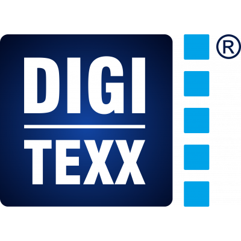
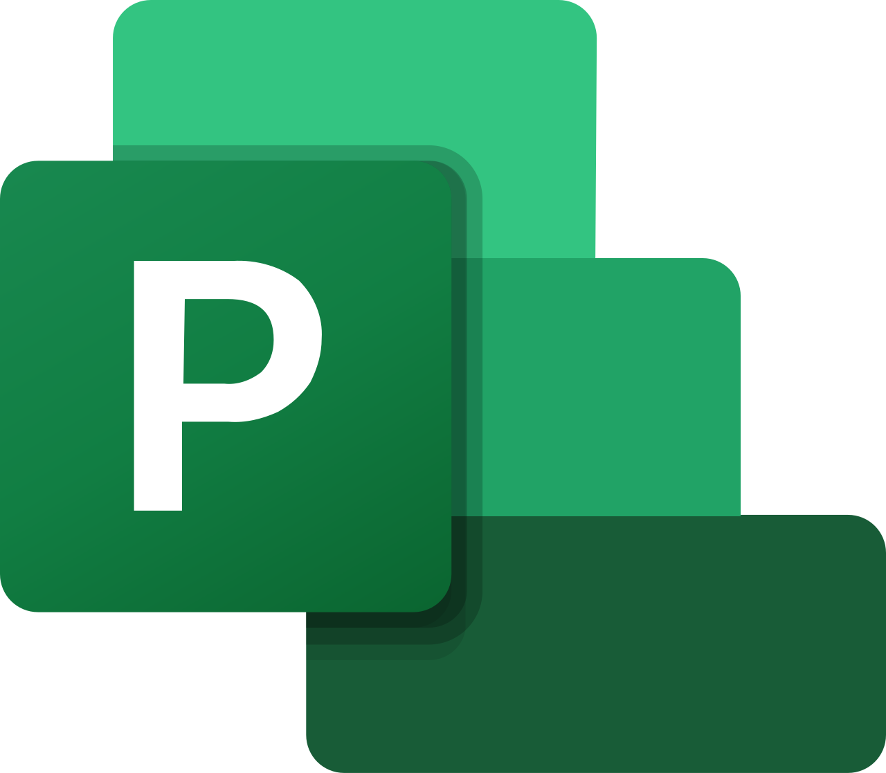
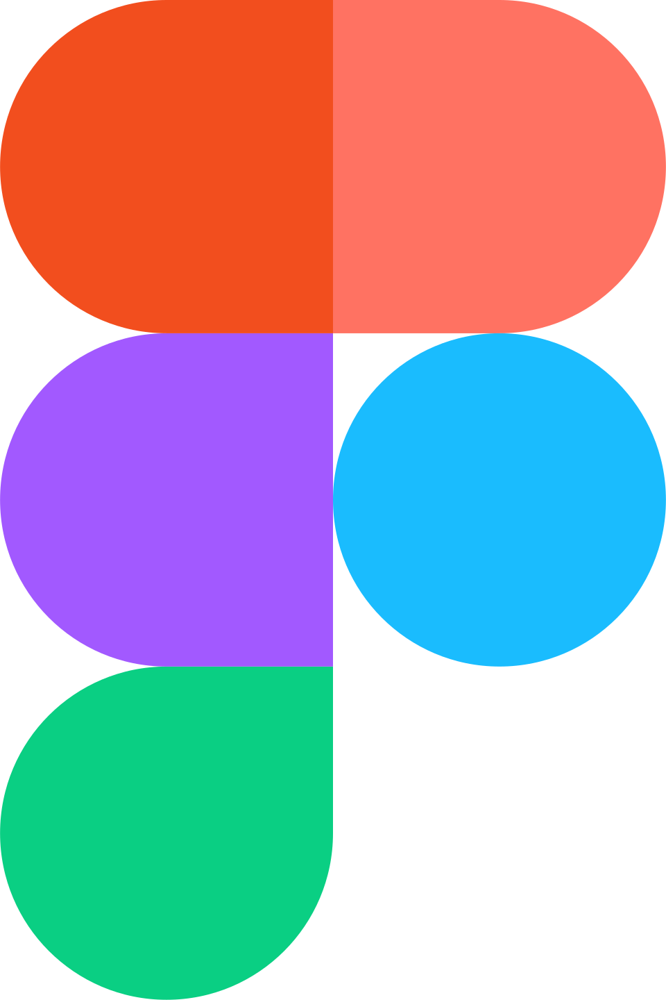
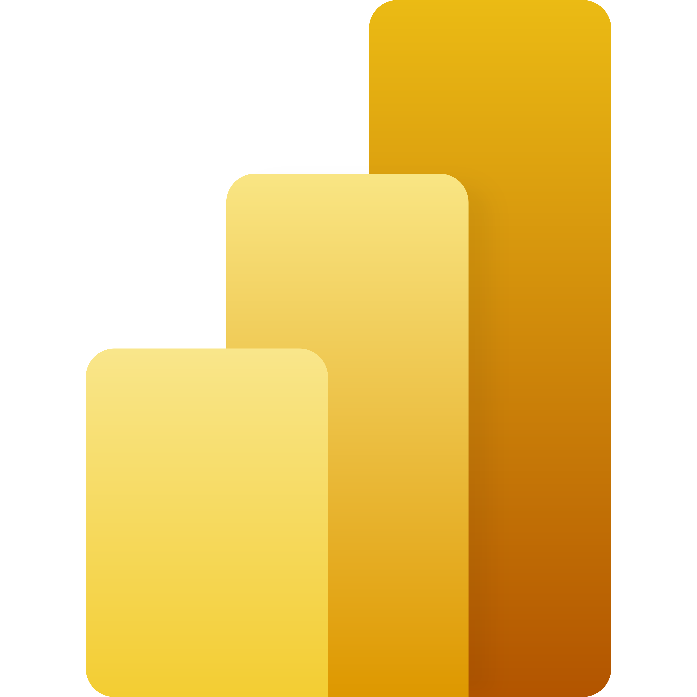

Strategic
I see the bigger picture and align solutions with business goals.
I connect business needs with technology to solve operational pain points, streamline workflows, and support meaningful digital transformation.
"The best solutions solve real business pain points."
I take a SMART approach — Strategic, Methodical, Adaptable, Resourceful, and Thoughtful.
I see the bigger picture and align solutions with business goals.
I turn complex problems into clear, actionable plans.
I embrace change and collaborate to overcome challenges.
I find practical solutions to real business pain points.
I balance user needs, business value, and long-term impact.
Hands-on experience coordinating AI and digital projects, supporting SaaS products, and connecting business stakeholders with delivery teams.

An academic foundation in business processes, information systems, data analytics, and software project delivery.
Learn fast. Adapt quickly. Work smart.

Microsoft
Figma
Power BISelected work in digital solutions, product analysis, software systems, and AI.
I'm interested in conversations about digital transformation, AI-driven solutions, product ideas, and improving how businesses work.